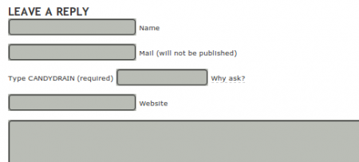

I’ve been making minor changes to the site recently (this will be the last theme change, honestly, I’m mostly happy with this one), the more interesting of them being a anti-spam feature I heard about a few years ago.
It’s a captcha, of sorts, except that none of y’all should ever notice it.
Take it away, Sam Ruby, from all the way back in 2007:
I’ve implemented an unusual captcha system. First, the images are not distorted. In fact, if you have posted to my weblog in the past 90 days, or have visited it within the past week (but more than an hour ago), and aren’t running afoul of the throttle, the display of the image will be entirely suppressed; furthermore, the input field will be pre-filled in for you and hidden. If you are not recognized, but have JavaScript turned on, DHTML will be used to fill in that input field for you, and that portion of the form will be set to display:none. In fact, even if you are new, have both JavaScript and images turned off, you will find that the alt attribute of the image will contain the necessary text.
Sounds great! It also sounds like a heck of a lot of work. I can’t be bothered generating an image, or working out when people have visited! I, being a lazy person, want to do this with the minimal amount of effort as possible. My only real goal here is to stop bots that are designed to understand WordPress forms. One possibility is that I could modify the form names to something other than their defaults, but that would involve actually learning how WordPress works, and seriously? Fuck that.
So, firstly I installed the simplist captcha plugin I could find. This guy involves configuring one static question and one static answer. It adds a text field to the comment submit form with your question written beside it, and the comment submission is only a success if that field contains your answer. Unmodified, it looks like this:

Then, all I did was add some JavaScript of the caliber even a enterprise development Java monkey like myself can produce:
<script type="text/javascript">
document.getElementById("spamq").value = "<?php echo $this->spam_answer; ?>";
document.getElementById("aspamquestion").style.display = "none";
</script>
And viola, anyone with JavaScript turned on will be back to having the comment form look like this…

… none the wiser to the seething churning machine of bot prevention raging in the background.
So, does it work? Well, I haven’t had any spam since I made the modifications, but I only had one instance before it, so maybe it’s to early to tell.
But I’m quietly confident. Jeff Atwood has (according to bloglines) the 104th most popular blog in existence. For as long as I’ve read his blog, his comment form has looked exactly like this:
Oranges all the way down. And if using one static word is enough to stop the rampant hoards of spammers, then by all accounts my blogs usage of two words is just overkill.


{kind=link}
{kind=link}
{kind=link}
{kind=link}